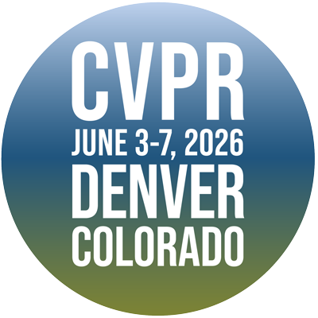
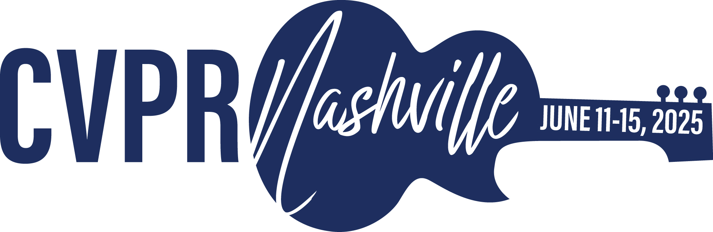

2025 — Present

South China University of Technology
Ph.D. Student, School of Electronic and Information Engineering
Advisor: Prof. Lianwen Jin
My name is Yuyi Zhang (张宇一). I am a Ph.D. student at South China University of Technology, working on document intelligence, computer vision, and multimodal learning. I am advised by Prof. Lianwen Jin at the Deep Learning and Vision Computing Lab (SCUT-DLVCLab).
My goal is to build intelligent systems that can accurately read, understand, generate, and restore complex visual documents.
My current research interests include:
Google Scholar · Updated September 2026
Ph.D. Student, School of Electronic and Information Engineering
Advisor: Prof. Lianwen Jin
M.S. Student, Deep Learning and Vision Computing Lab
Advisor: Prof. Lianwen Jin

Bachelor’s Degree
Research Intern
Research Intern

Team RRay · CVPR 2026 Workshop

Team Bbox · Track 1: Restoration · CVPR 2025 Workshop

One unified MLLM iteratively drafts, verifies, and restores damaged historical inscriptions.
Inscriptions are invaluable cultural heritage, yet centuries of fractures, erosion, and oxidation have rendered many partially illegible. UniHIR is the first unified multimodal large language model for end-to-end historical inscription restoration. Its Draft-Guided Localization and Hierarchical Self-Refinement designs enable iterative damage localization, content prediction, and self-correction, while UHIRFactory and HIR-Bench support memory-efficient instruction tuning for high-resolution inputs. Experiments show superior text-restoration accuracy and appearance quality with consistent page-level typography and style.
Proceedings of the 64th Annual Meeting of the Association for Computational Linguistics (Volume 1: Long Papers), 2026

AutoHDR restores full historical pages through a historian-inspired three-stage workflow.
Historical documents suffer from tears, water erosion, and oxidation, while existing restoration methods are often limited to a single modality or small regions. This work introduces FPHDR, a full-page dataset containing 1,633 real and 6,543 synthetic images, and AutoHDR, a three-stage system combining OCR-assisted damage localization, vision-language context prediction, and patch-autoregressive appearance restoration. Its modular design supports human-machine collaboration. On severely damaged documents, AutoHDR raises OCR accuracy from 46.83% to 84.05%, and to 94.25% with human intervention.
Annual Meeting of the Association for Computational Linguistics (ACL Main), 2025

A 97,455-category benchmark for mega-scale Chinese character recognition.
Mega-category Chinese character recognition remains underexplored because existing datasets cover only a fraction of the latest GB18030-2022 standard. MegaHan97K introduces a large-scale dataset spanning 97,455 character categories across handwritten, historical, and synthetic subsets. It is the first dataset to fully support GB18030-2022 and provides balanced samples to reduce long-tail bias. Extensive benchmarks reveal new challenges in storage, morphologically similar character recognition, and zero-shot learning, establishing a foundation for future mega-category OCR research.
Pattern Recognition, 2025

A lightweight hierarchical codebook enables efficient zero-shot Chinese text recognition.
Chinese text recognition is challenged by intricate character structures, a vast vocabulary, and unseen characters that conventional one-hot encoding cannot represent. HierCode introduces a lightweight hierarchical codebook using multi-hot representations, binary-tree encoding, and prototype learning to capture shared radicals and structures. The representation supports zero-shot recognition of out-of-vocabulary characters and efficient line-level matching with visual features. Experiments on handwritten, scene, document, web, and ancient text benchmarks show state-of-the-art conventional and zero-shot recognition with fewer parameters and fast inference.
Pattern Recognition, Volume 158, 110963, 2025

A full-workflow poster generator with accurate, editable, and scalable HTML typography.
Commercial poster generation requires both appealing graphics and precise, editable text, yet existing systems often provide incomplete workflows and unreliable typography. PosterVerse automates the process through blueprint creation with a fine-tuned language model, graphical background generation with customized diffusion models, and unified layout-text rendering using an MLLM-powered HTML engine. It also introduces PosterDNA, an HTML-based commercial poster dataset supporting scalable typography. Experiments demonstrate visually compelling posters with accurate text alignment and flexible, customizable layouts.
AAAI Conference on Artificial Intelligence (AAAI Oral), 2026

DiffHDR predicts and reconstructs the original appearance of damaged historical documents.
Historical documents contain invaluable cultural information but frequently suffer from missing characters, damaged paper, and ink erosion. This work formulates Historical Document Repair as the task of predicting a document's original appearance and introduces HDR28K, a dataset of 28,552 damaged-repaired image pairs with character-level annotations and diverse degradations. DiffHDR augments a diffusion model with semantic and spatial guidance plus a character perceptual loss for coherent content and appearance. It substantially outperforms previous methods on real damaged documents and also generalizes to document editing and text-block generation.
AAAI Conference on Artificial Intelligence (AAAI Oral), 2025

A one-shot diffusion framework generates complete font libraries from a style reference.
One-shot font generation aims to create a complete font library from a small number of style references while preserving each source character's content. FontDiffuser reframes font imitation as an image-to-image denoising diffusion process. Its Multi-scale Content Aggregation block combines global and local cues to preserve intricate strokes, while Style Contrastive Refinement disentangles and supervises font style through contrastive learning. Experiments show state-of-the-art generation across diverse characters and styles, particularly for complex glyphs and large style variations.
AAAI Conference on Artificial Intelligence, 2024
A unified MLLM for self-refining historical inscription restoration through drafting, verification, and restoration.
A full-page historical document restoration pipeline inspired by the workflow of expert historians.
A large-scale dataset for Chinese character recognition with more than 97,000 character categories.
A full-workflow framework for commercial-grade poster generation with scalable typography.
A quantitative and in-depth evaluation of OCR capabilities in multimodal large models.
Ministry of Education of China
Ministry of Education of China
Reviewer: Pattern Recognition · AAAI · ACM Multimedia (ACM MM)
Piano · Guitar · Playing in bands · Improvisational accompaniment · Football · Badminton